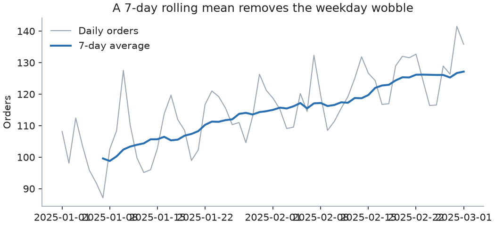
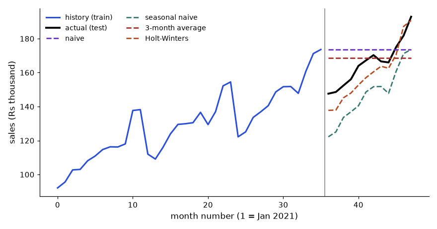
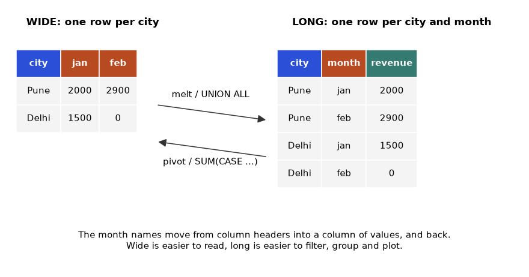

Real data is never clean. Cities are spelled three ways, dates arrive as text, one order appears twice, one amount has an extra zero, and the sales team and the finance team keep their tables apart. Analysts spend more than half their working time fixing exactly these problems. This chapter gives you a toolbox for it: cleaning, transforming columns, grouping and summarising, joining tables, reshaping, and working with dates and time. We use one messy 9-line orders file for the whole chapter, so each fix builds on the one before. By the end, you can turn a dirty file into a tidy table and a summary that a manager can read.
DataFrame.applymap was deprecated in pandas 2.1 in favour of DataFrame.map and removed in pandas 3.0 (we use map). pandas 3 shows text columns as str.The messy file. Read everything as text first (dtype=str), so nothing is guessed:
import pandas as pd, numpy as np, io
raw = """order_id,customer_id,city,order_date,amount,qty
1,C1,pune,2025-01-01,500,2
2,C2,Mumbai ,2025-01-01,1200,1
3,C3,MUMBAI,2025-01-02,,3
4,C1,Pune,2025-01-02,450,1
4,C1,Pune,2025-01-02,450,1
5,C4,Delhi,2025-01-03,99999,2
6,C5,delhi,not_a_date,300,4
7,C2,Mumbai,2025-01-04,"1,150",1
8,C6,Pune,2025-01-05,380,
"""
df = pd.read_csv(io.StringIO(raw), dtype=str)What is wrong with it? Before reading on, find at least five problems. (Answer list: city spelling and spaces; a missing amount; a duplicate row for order 4; an impossible amount 99999; a bad date "not_a_date"; "1,150" with a comma; a missing qty.)
Words you need
| Word | Meaning |
|---|---|
NaN / NaT | pandas' marker for a missing number / missing date |
| Imputation | Filling a missing value with a sensible guess |
| Duplicate | A row (or key) that appears more than once |
| Outlier | A value far from the others |
| Coerce | Convert, and turn failures into missing values |
Step 1: count the problems
print(df.isna().sum())
print(df.duplicated().sum(), df.duplicated(subset="order_id").sum())order_id 0
customer_id 0
city 0
order_date 0
amount 1
qty 1
dtype: int64
1 1isna().sum() counts missing per column: one amount, one qty.duplicated() marks the second and later copies of a row that is identical in every column. subset="order_id" checks the key alone. Both give 1: order 4 is repeated.Step 2: fix duplicates, text, dates, numbers
df = df.drop_duplicates()
df["city"] = df["city"].str.strip().str.title()
df["order_date"] = pd.to_datetime(df["order_date"], errors="coerce")
df["amount"] = pd.to_numeric(df["amount"].str.replace(",", ""), errors="coerce")
df["qty"] = pd.to_numeric(df["qty"], errors="coerce")
print(df) order_id customer_id city order_date amount qty
0 1 C1 Pune 2025-01-01 500.0 2.0
1 2 C2 Mumbai 2025-01-01 1200.0 1.0
2 3 C3 Mumbai 2025-01-02 NaN 3.0
3 4 C1 Pune 2025-01-02 450.0 1.0
5 5 C4 Delhi 2025-01-03 99999.0 2.0
6 6 C5 Delhi NaT 300.0 4.0
7 7 C2 Mumbai 2025-01-04 1150.0 1.0
8 8 C6 Pune 2025-01-05 380.0 NaNdrop_duplicates() removed row 5 (the repeat of order 4). The index jumps from 3 to 5: the row labels are kept..str.strip() removes spaces, .str.title() fixes case: pune, MUMBAI, Mumbai all became standard. Without this, a groupby("city") would show Mumbai, MUMBAI and "Mumbai " as three cities.errors="coerce" turned "not_a_date" into NaT (not a time). We keep the row and handle it later.qty became float because it has a NaN.Missing values: the options
| Option | Code | When |
|---|---|---|
| Drop rows | df.dropna(subset=["order_date"]) | The field is essential (a date) |
| Fill with a constant | df["qty"].fillna(1) | A sensible default exists |
| Fill with the median | df["amount"].fillna(df["amount"].median()) | Numeric, with outliers |
| Fill with the previous value | s.ffill() | Time series |
| Interpolate | s.interpolate() | Smooth measurements |
| Leave missing and flag | df["amount"].isna() | Missingness itself carries meaning |
We checked: pd.Series([1, np.nan, 3]).ffill() gives [1.0, 1.0, 3.0] and .interpolate() gives [1.0, 2.0, 3.0].
Worked example 5.1.1 Why median, not mean, to fill the missing amount.
median 500.0). Filling with the mean would put 14,854 into order 3, absurd for a shop where most orders are 300 to 1200.df["amount"].median() printed 500.0.Outliers with the IQR rule. The IQR (interquartile range) is Q3 − Q1, the spread of the middle half of the data. A common rule flags values below Q1 − 1.5 × IQR or above Q3 + 1.5 × IQR.
Worked example 5.1.2 Flag outliers in the amounts.
415.0 1175.0 760.0 -725.0 2315.0. Only order 5 (99999) is above 2315, so it is the outlier.The z-score rule, and when it fails. A z-score is (value − mean) / standard deviation: how many standard deviations a value sits from the mean. A common rule flags |z| > 3. We computed it for these 7 amounts: the z for 99999 is only 2.27, and the others are about −0.37. The rule would not flag the outlier! Reason: with only n values, no z-score can exceed (n − 1) / √n, which for n = 7 is 6 / 2.646 = 2.27. Also, the outlier itself inflates the mean and the standard deviation, which hides it. On small or heavy-tailed data prefer IQR or the median absolute deviation.
Capping with clip. df["amount"].clip(upper=2315) replaces 99999 with 2315 and leaves the others. Real output for order 5: 99999.0 -> 2315.0.
Strings in bulk. The .str accessor works on whole columns: .str.upper(), .str.contains("un"), .str.replace("P", "B"), .str.split(","), .str.extract(r"(\d+)"). We checked on ["Pune", "Delhi", "Pune"]: contains("un") gave [True, False, True] and replace("P", "B") gave ['Bune', 'Delhi', 'Bune'].
The picture
raw text ──► drop duplicates ──► standardise text ──► convert types ──► handle missing ──► handle outliers
(everything (keys unique) (strip, title) (dates, numbers) (drop/fill/flag) (fix/cap/flag)
is a string)Connection to the real job. In an interview a typical task is "here is a messy file; clean it and tell me what you assumed". Write the assumptions as comments. In SQL, the same checks are COUNT(*) - COUNT(col) for nulls and GROUP BY key HAVING COUNT(*) > 1 for duplicates (see the SQL document).
Applications
Check yourself
errors="coerce" do? Answer: Failed conversions become NaN or NaT instead of errors.map, apply or np.where. It is used to prepare features and derived values.The tools
| Task | Code |
|---|---|
| New column | df.assign(total=df.qty * df.amount) or df["total"] = ... |
| Map values by a dictionary | s.map({"Pune": "PNQ", "Delhi": "DEL"}) |
| Apply a function to each value | s.apply(len) |
| Apply to each cell of a table | df.map(func) (the old name applymap was removed in pandas 3.0) |
| Apply by column / by row | df.apply(func) / df.apply(func, axis=1) |
| If-then-else | np.where(cond, a, b) |
| Keep or replace | s.where(cond) keeps True, others NaN; s.mask(cond) is the opposite |
| Bins by edges | pd.cut(s, bins=[...], labels=[...]) |
| Bins by quantiles | pd.qcut(s, q=4) |
| Dummy (0/1) columns | pd.get_dummies(s, dtype=int) |
Worked example 5.2.1 Label orders using np.where, cut, qcut on the filled amounts. The cleaned amounts after median-fill (order 3 got 500) are 500, 1200, 500, 450, 99999, 300, 1150, 380.
df["amount_f"] = df["amount"].fillna(500.0)
print(df.assign(tag=np.where(df.amount_f > 1000, "big", "small"))["tag"].tolist())
print(pd.cut(df.amount_f, bins=[0, 400, 1000, np.inf], labels=["low", "mid", "high"]).value_counts())
print(pd.qcut(df.amount_f, q=4, labels=False).tolist())['small', 'big', 'small', 'small', 'big', 'small', 'big', 'small']
amount_f
mid 3
high 3
low 2
Name: count, dtype: int64
[1, 3, 1, 1, 3, 0, 2, 0]np.where is "if amount > 1000 then big else small": 1200, 99999 and 1150 are big (three).pd.cut uses the edges you give: (0, 400] is low (300, 380 give 2), (400, 1000] is mid (500, 500, 450 give 3), above 1000 is high (1200, 99999, 1150 give 3). Counts: low 2, mid 3, high 3.pd.qcut makes bins with equal counts. With labels=False, it returns the bin number 0 to 3. Eight values into four bins is two per bin.cut when business rules set the edges (age bands, price tiers). Use qcut for percentiles, such as "top 25% of customers".Dummy variables. pd.get_dummies(df.city, prefix="city", dtype=int) makes one 0/1 column per city: city_Delhi, city_Mumbai, city_Pune, with exactly one 1 in each row. Models need numbers, so this turns text categories into numbers (called one-hot encoding).
where keeps, mask hides. df.amount.where(df.amount < 1000) gave [500.0, nan, nan, 450.0, nan, 300.0, nan, 380.0]: values 1000 or more became NaN.
map and apply. On ["Pune", "Delhi", "Pune"]: .map({"Pune": "PNQ", "Delhi": "DEL"}) gives ['PNQ', 'DEL', 'PNQ']; .apply(len) gives [4, 5, 4]. For a table d = pd.DataFrame({"a": [1, 2, 3], "b": [10, 20, 30]}): d.apply(lambda c: c.max() - c.min()) gives a 2, b 20 (per column); d.apply(lambda r: r.a + r.b, axis=1) gives [11, 22, 33] (per row, slow, avoid for big data); d.map(lambda x: x * 2) doubles every cell.
The picture
amount_f: 300 380 | 450 500 500 | 1150 1200 99999
cut edges: (0,400] (400,1000] (1000, inf)
label: low mid highConnection to the real job. Feature creation (bands, flags, dummies) is the bridge from analytics to machine learning. In SQL these are CASE WHEN expressions.
Applications
apply(axis=1) for simple arithmetic. It is a hidden loop. df.a + df.b is the same result, thousands of times faster.Check yourself
cut and qcut? Answer: cut uses edges you set, qcut makes bins with equal counts.get_dummies return for 3 cities? Answer: Three 0/1 columns, one per city.s.where(cond) do to rows where cond is False? Answer: Replaces them with NaN.groupby and aggregate functions. It is used to find totals and averages per category.groupby is that, in one line, and it is the single most important pandas tool.The recipe
g = df.groupby("city").agg(orders=("order_id", "count"),
revenue=("amount", "sum"),
avg=("amount", "mean"))
print(g)This form is called named aggregation: new_name=(column, function).
orders revenue avg
city
Delhi 2 100299.0 50149.500000
Mumbai 3 2350.0 1175.000000
Pune 3 1330.0 443.333333Worked example 5.3.1 Check the numbers by hand.
count counts order_ids, so 3; sum and mean skip the missing amount: 1200 + 1150 = 2350, mean 2350 / 2 = 1175. Pune: 500 + 450 + 380 = 1330, mean 443.33.Other aggregation tools
| Tool | What it does |
|---|---|
transform | Returns a result with the same length as the input (for shares, ranks within group) |
filter | Keeps or drops whole groups by a rule |
apply | Runs your function on each group (flexible, slower) |
pivot_table | groupby with rows and columns, like Excel |
crosstab | Counts of two categorical columns |
value_counts | Counts (or normalize=True shares) of one column |
Worked example 5.3.2 transform: each order's share of its city total.
df["city_share"] = df["amount"] / df.groupby("city")["amount"].transform("sum")agg would shrink the table to 3 rows, transform keeps all 8 rows and repeats the group total beside each. Use it for "percent of group".filter: df.groupby("city").filter(lambda x: len(x) >= 3) keeps only cities with at least 3 orders: Mumbai and Pune (6 rows).
pivot_table, crosstab, value_counts:
pd.pivot_table(df, index="city", columns=df.order_date.dt.day, values="amount", aggfunc="sum")
pd.crosstab(df.city, df.qty.fillna(0))
df.city.value_counts(normalize=True)order_date 1.0 2.0 3.0 4.0 5.0
city
Delhi NaN NaN 99999.0 NaN NaN
Mumbai 1200.0 0.0 NaN 1150.0 NaN
Pune 500.0 450.0 NaN NaN 380.0
qty 0.0 1.0 2.0 3.0 4.0
city
Delhi 0 0 1 0 1
Mumbai 0 2 0 1 0
Pune 1 1 1 0 0
city
Pune 0.375
Mumbai 0.375
Delhi 0.250
Name: proportion, dtype: float640.0 (order 3 exists, but its amount is missing, and the sum of nothing is 0), while days with no orders show NaN. These two zeros and NaNs mean different things. This is a classic trap: a sum of all-missing values is 0, not "unknown".crosstab counts rows for each pair: Pune has one order each with qty 0 (missing, filled with 0 for display), 1 and 2.value_counts(normalize=True): 3 of 8 orders are Pune, 0.375.Window functions: rolling, expanding, ewm, cumsum, shift, pct_change, rank. A window looks at a few neighbouring rows at a time.
d = pd.DataFrame({"day": pd.date_range("2025-01-01", periods=7),
"rev": [100, 120, 90, 150, 160, 140, 200]}).set_index("day")
d["ma3"] = d.rev.rolling(3).mean()
d["cum"] = d.rev.cumsum()
d["pct"] = d.rev.pct_change().round(3)
d["prev"] = d.rev.shift(1)
d["rank"] = d.rev.rank(ascending=False)
d["ewm"] = d.rev.ewm(span=3, adjust=False).mean().round(2)
print(d) rev ma3 cum pct prev rank ewm
day
2025-01-01 100 NaN 100 NaN NaN 6.0 100.00
2025-01-02 120 NaN 220 0.200 100.0 5.0 110.00
2025-01-03 90 103.333333 310 -0.250 120.0 7.0 100.00
2025-01-04 150 120.000000 460 0.667 90.0 3.0 125.00
2025-01-05 160 133.333333 620 0.067 150.0 2.0 142.50
2025-01-06 140 150.000000 760 -0.125 160.0 4.0 141.25
2025-01-07 200 166.666667 960 0.429 140.0 1.0 170.62Worked example 5.3.3 Verify the rolling mean and percentage change by hand.
ma3 values are NaN, because a 3-day window needs 3 days.cum is the running total: 100, 220, 310, 460, 620, 760, 960 (last equals the sum 100 + 120 + 90 + 150 + 160 + 140 + 200 = 960).shift(1) gives yesterday's value on today's row, which is how you build week-on-week growth. ewm (exponentially weighted mean) gives recent days more weight: ewm day 2 = 0.5 × 120 + 0.5 × 100 = 110 (for span=3, α = 2 / (3 + 1) = 0.5).
How to read it: the grey line is the daily value with a weekly zig-zag. The blue line averages each 7 days, so the zig-zag cancels and the upward trend shows.
The picture
split apply combine
city=Delhi ──► sum, mean ──► ┌──────────────────┐
city=Mumbai ──► sum, mean ──► │ one row per city │
city=Pune ──► sum, mean ──► └──────────────────┘Connection to the real job. groupby is SQL's GROUP BY; transform and rolling are SQL window functions (SUM() OVER (PARTITION BY ...), AVG() OVER (ORDER BY ... ROWS 2 PRECEDING)). The SQL document covers them.
Applications
Check yourself
agg and transform? Answer: agg shrinks to one row per group; transform keeps the original rows.rolling(3) values NaN? Answer: There are not yet three days in the window.shift(1) give? Answer: The previous row's value.merge and join link tables by keys, and concat stacks tables together.XLOOKUP did in Excel (Chapter 2), but for every row at once and with explicit rules for missing partners.Join types. merge(a, b, on=key, how=...):
how | Keeps |
|---|---|
inner | Only keys in both |
left | All rows of the left table |
right | All rows of the right table |
outer | All rows of both |
a = pd.DataFrame({"cid": ["C1", "C2", "C3"], "name": ["Asha", "Ben", "Chen"]})
b = pd.DataFrame({"cid": ["C2", "C3", "C4", "C3"], "amt": [10, 20, 30, 5]})
print(a.merge(b, on="cid", how="outer", indicator=True)) cid name amt _merge
0 C1 Asha NaN left_only
1 C2 Ben 10.0 both
2 C3 Chen 20.0 both
3 C3 Chen 5.0 both
4 C4 NaN 30.0 right_onlyWorked example 5.4.1 Predict the number of rows for each join.
a: C1, C2, C3. Keys in b: C2, C3, C4, C3 (C3 twice).a keys: C1 (no match, 1 row), C2 (1), C3 (2) = 4 rows. (right) All b rows: 4 rows (C4 has no name). (outer) C1, C2, C3 x2, C4 = 5 rows.b, so Chen is repeated. Joining on a key that is not unique multiplies rows, and sums of a column from the left table are then double counted.Guard with validate. a.merge(b, on="cid", validate="one_to_one") raised MergeError: Merge keys are not unique in right dataset; not a one-to-one merge. Always state the expected relationship (one_to_one, one_to_many, many_to_one) and let pandas stop you if it is false. indicator=True adds the _merge column above, so you can count unmatched rows, e.g. (m["_merge"] == "left_only").sum().
Other combiners
| Tool | Use |
|---|---|
pd.concat([a, b], ignore_index=True) | Stack tables with the same columns (like SQL UNION ALL). We stacked two 3-row frames and got shape (6, 2). |
a.join(b) | Merge on the index. a.join(b) with indexes x,y and y,z gave a left join: x has NaN for w. |
pd.merge_asof(trades, quotes, on="t") | For each trade, the last quote before it (nearest earlier time) |
x.combine_first(y) | Fill missing values in x from y |
We ran merge_asof with trades at 10:00:01 and 10:00:05 and quotes at 10:00:00, 10:00:03, 10:00:06. Result: the first trade got the 10:00:00 quote (bid 99), the second got the 10:00:03 quote (bid 100). The 10:00:06 quote is after both trades, so it is unused. Both tables must be sorted by the key. This pattern matches an event (an order) to the latest state (price, plan, status) before it.
The picture
a (left) b (right)
C1 Asha C2 10 inner: C2, C3, C3
C2 Ben join C3 20 left: C1, C2, C3, C3
C3 Chen on cid C4 30 outer: C1, C2, C3, C3, C4
C3 5Connection to the real job. Joins are where numbers go wrong in real analyses: duplicate keys cause double counting, and unmatched keys silently disappear in inner joins. A reviewer will ask: "what is the grain of each table, and did the row count change after the join?".
Applications
merge_asof).len(left) and len(result). If a left join of a many-to-one lookup grows the rows, the lookup keys are duplicated.Check yourself
how="left".indicator=True add? Answer: A _merge column saying left_only, right_only or both.melt and pivot.The tools
| Tool | Direction |
|---|---|
melt | wide to long |
pivot | long to wide (needs unique index/column pairs) |
pivot_table | long to wide with aggregation |
stack / unstack | move a column level to the rows / rows level to columns |
explode | one list-valued cell becomes several rows |
pd.json_normalize | flatten nested JSON |
w = pd.DataFrame({"city": ["Pune", "Delhi"], "jan": [10, 20], "feb": [12, 18]})
l = w.melt(id_vars="city", var_name="month", value_name="sales")
print(l)
print(l.pivot(index="city", columns="month", values="sales")) city month sales
0 Pune jan 10
1 Delhi jan 20
2 Pune feb 12
3 Delhi feb 18
month feb jan
city
Delhi 18 20
Pune 12 10Worked example 5.5.1 Check the round trip.
melt keeps city and turns the two month columns into 4 rows (2 cities × 2 months). pivot rebuilds the 2 × 2 table. Note that the columns come back sorted alphabetically (feb, jan) not in calendar order.sales is 10 + 20 + 12 + 18 = 60 in both shapes.groupby want long data. People reading a report want wide data.explode and json_normalize
e = pd.DataFrame({"id": [1, 2], "tags": [["a", "b"], ["c"]]})
print(e.explode("tags"))
nested = [{"id": 1, "user": {"name": "A", "geo": {"city": "Pune"}}},
{"id": 2, "user": {"name": "B", "geo": {"city": "Delhi"}}}]
print(pd.json_normalize(nested)) id tags
0 1 a
0 1 b
1 2 c
id user.name user.geo.city
0 1 A Pune
1 2 B Delhiexplode repeated id 1 for each tag (the index label 0 repeats too; use reset_index(drop=True) if you need a clean index). json_normalize flattened the nested dictionaries into dotted column names, which is what you need for API responses.
stack and unstack: l.set_index(["city", "month"]).sales.unstack() returns the same wide table as pivot. stack() goes the other way (columns back into rows). We tested a wide table with one empty cell (Delhi, feb): in pandas 3 stack() kept that cell as NaN, while older versions dropped missing cells by default. The behaviour of stack has changed across versions, so check it on your version.
The picture
WIDE LONG
city jan feb city month sales
Pune 10 12 melt ──► Pune jan 10
Delhi 20 18 Delhi jan 20
◄── pivot Pune feb 12
Delhi feb 18Connection to the real job. Survey exports and finance reports are wide; databases, BI tools and ML want long. Power Query's Unpivot (Chapter 3) and Power BI (Chapter 9) rely on long data. JSON from APIs is nested, so json_normalize is the first step in many pipelines.
Applications
pivot fails with "Index contains duplicate entries, cannot reshape" when two rows share the same index/column pair. Use pivot_table with an aggfunc, or fix the duplicates.Check yourself
melt do? Answer: Turns wide columns into long rows.pivot_table.explode do to a list cell? Answer: Makes one row per list item.The tools
| Tool | Does |
|---|---|
s.dt.year, .dt.month, .dt.dayofweek, .dt.day_name() | Pull parts out of a datetime column |
df.set_index("ts") | Make time the index |
resample("h"), ("D"), ("W"), ("MS") | Regroup to hours, days, weeks, month starts |
asfreq("30min") | Re-index to a regular step (no aggregation) |
tz_localize, tz_convert | Attach and change time zones |
pd.bdate_range | Business days only |
Frequency codes: h hour, D day, W week, MS month start, min minute. (Older pandas versions used uppercase H; pandas 3 uses lowercase h.)
ts = pd.DataFrame({"ts": pd.to_datetime(["2025-01-01 10:00", "2025-01-01 10:20",
"2025-01-01 11:05", "2025-01-02 09:00"]),
"v": [1, 2, 3, 4]}).set_index("ts")
print(ts.resample("D").agg(["sum", "count"]))
print(ts.index.day_name().tolist())
print(ts.index.tz_localize("UTC").tz_convert("Asia/Kolkata")[0]) v
sum count
ts
2025-01-01 6 3
2025-01-02 4 1
['Wednesday', 'Wednesday', 'Wednesday', 'Thursday']
2025-01-01 15:30:00+05:30Worked example 5.6.1 Explain every number.
Gaps. ts.resample("h").sum() fills empty hours with 0 (we saw hours 12:00 to 08:00 as 0), which is right for counts but wrong for temperatures or prices (use .mean(), which gives NaN for empty buckets, or ffill). asfreq("30min") shows NaN where nothing was recorded. pd.bdate_range("2025-01-02", periods=5) gave Thu 2 Jan, Fri 3 Jan, then Mon 6 Jan, Tue 7 Jan, Wed 8 Jan: weekends skipped. Public holidays need a custom calendar.
The picture
events: 10:00 10:20 | 11:05 | ... | 09:00(next day)
resample("h"): [10h: 3] [11h: 3] [12h..08h: 0] [09h: 4]
resample("D"): [Jan 1: 6 total, 3 events] [Jan 2: 4 total, 1 event]Connection to the real job. Daily and weekly rollups drive almost every dashboard (Chapters 3, 9, 11). For a shop you resample order timestamps to orders per hour or per day exactly this way.
Applications
Check yourself
resample("D") do? Answer: Regroups time-indexed rows into days.statsmodels is not installed here, so we write exponential smoothing in a few lines of NumPy, which also shows exactly what the method does. The Excel and DAX variants are given as formulas to type: not run here, but each is checked against the pandas numbers where a number is quoted.Words you need first
| Word | Plain meaning | Example |
|---|---|---|
| Horizon | How far ahead you forecast | The next 12 months |
| Trend | A steady rise or fall | Sales grow Rs 1,500 a month |
| Seasonality | A pattern that repeats on a fixed calendar | Every November is high |
| Level | The current "base" value once trend and season are removed | Typical monthly sales right now |
| Backtest | Pretend it is an earlier date, forecast, and compare with what really happened | Train on 2021 to 2023, test on 2024 |
| Naive forecast | Repeat the last observed value | Next month = this month |
| Seasonal naive | Repeat the value from the same season last cycle | Next March = last March |
With actual values A and forecasts F, the error of one point is A - F. Three summaries are used every day:
MAE is in the same unit as the data (rupees), so it is easy to explain. MAPE is a percentage, but it explodes when an actual value is small and is undefined when it is zero. WAPE weights big months more, and is the one most retail and supply-chain teams prefer.
Problem 5.7.1 Actual sales for four products are 100, 200, 50, 150. The forecasts were 110, 180, 80, 140. Compute MAE, MAPE and WAPE.
| Errors | |100 - 110| = 10, |200 - 180| = 20, |50 - 80| = 30, |150 - 140| = 10. Sum = 70. |
|---|---|
| MAE | 70 / 4 = 17.5 |
| MAPE | 10/100 = 10%, 20/200 = 10%, 30/50 = 60%, 10/150 = 6.67%. Average = (10 + 10 + 60 + 6.67) / 4 = 21.67% |
| WAPE | 70 / (100 + 200 + 50 + 150) = 70 / 500 = 14% |
| Meaning | One small product (actual 50, error 30) pulls MAPE up to 21.7%, while WAPE says that in rupee terms we are off by 14%. Report which one you use. |
Moving average. Forecast = average of the last k months. It smooths noise but lags a trend.
Simple exponential smoothing (SES). Keep one number, the level L. Each new actual value y updates it: Lnew = α·y + (1 − α)·Lold, where α (alpha, between 0 and 1) says how much you trust the newest value. The forecast for every future month is the last L. A large α reacts fast, a small α is calm.
Problem 5.7.2 Sales were 10, 12, 11. Start with L = 10 and α = 0.5. What is the SES forecast for next month?
| Start | L = 10 (the first value) |
|---|---|
| After 12 | L = 0.5 × 12 + 0.5 × 10 = 11 |
| After 11 | L = 0.5 × 11 + 0.5 × 11 = 11 |
| Answer | Forecast = 11 for next month and every month after. Weights on the past: the latest value counts 50%, the one before 25%, the one before 12.5%, so older months fade away exponentially (hence the name). |
Holt-Winters (triple exponential smoothing). The same idea with three numbers updated each month: a level, a trend (change per month) and a seasonal effect for each of the 12 months. Each has its own smoothing weight (α, β, γ). The forecast h months ahead is level + h × trend + the seasonal effect of that month. We use the additive form, where the seasonal effect is added in rupees. (A multiplicative form scales instead, suited to seasons that grow with the level.)
The shop's monthly sales for 48 months (Rs thousand) are generated with a seeded generator: a base of 100, growth of 1.5 per month, a seasonal pattern that peaks in November and December, and random noise. We train on the first 36 months, forecast the last 12 and score each method on those 12 unseen months. The weights (α, β, γ) for Holt-Winters are chosen from a small grid by the smallest one-step-ahead error on the training months only. Choosing them using the test months would be cheating.
import numpy as np, pandas as pd, itertools
rng = np.random.default_rng(11)
months = pd.period_range("2021-01", periods=48, freq="M")
season = np.array([-8, -10, -4, 0, 3, 5, 4, 6, 2, 10, 18, 22], dtype=float)
y = pd.Series((100 + 1.5 * np.arange(48) + np.tile(season, 4) + rng.normal(0, 3, 48)).round(1), index=months)
train, test = y.iloc[:36], y.iloc[36:]
def hw(x, h, m, a, b, g):
"""Additive Holt-Winters. Returns (one-step squared error on x, forecast of h steps)."""
level = x[:m].mean(); trend = (x[m:2*m].mean() - x[:m].mean()) / m
seas = list(x[:m] - level); sse = 0.0
for t in range(m, len(x)):
pred = level + trend + seas[t - m]; sse += (x[t] - pred) ** 2
prev = level
level = a * (x[t] - seas[t - m]) + (1 - a) * (level + trend)
trend = b * (level - prev) + (1 - b) * trend
seas.append(g * (x[t] - level) + (1 - g) * seas[t - m])
return sse, np.array([level + (k + 1) * trend + seas[len(x) - m + (k % m)] for k in range(h)])
grid = list(itertools.product((0.1, 0.3, 0.5), (0.05, 0.1, 0.2), (0.1, 0.3, 0.5)))
best = min(grid, key=lambda p: hw(train.values, 12, 12, *p)[0])
print("chosen alpha, beta, gamma:", best)
forecasts = {
"naive": np.repeat(train.iloc[-1], 12),
"seasonal naive": train.iloc[-12:].values,
"3-month average": np.repeat(train.iloc[-3:].mean(), 12),
"Holt-Winters": hw(train.values, 12, 12, *best)[1],
}
rows = []
for name, f in forecasts.items():
e = np.abs(test.values - f)
rows.append({"method": name, "MAE": e.mean(), "MAPE_%": (e / test.values).mean() * 100,
"WAPE_%": e.sum() / test.values.sum() * 100})
print(pd.DataFrame(rows).round(2).to_string(index=False))chosen alpha, beta, gamma: (0.5, 0.05, 0.5)
method MAE MAPE_% WAPE_%
naive 12.71 7.94 7.67
seasonal naive 18.73 11.49 11.31
3-month average 10.46 6.41 6.31
Holt-Winters 7.12 4.41 4.30Holt-Winters wins with an average miss of 7.1 thousand (4.3% of sales), against 12.7 for the naive forecast. Look at the surprise in the table: the seasonal naive forecast is the worst (MAE 18.7). The reason is that sales grow about 18 a year, and "same month last year" ignores that growth, so it is always too low. A baseline is not guaranteed to be good, but it is guaranteed to be easy to beat or to explain. Always check the level of the error against the data scale: an MAE of 7 on sales near 160 is 4%, a useful forecast. The 3-month average is better than naive because it averages out the month-to-month noise.

How to read it: the vertical grey line separates what the model saw (left) from what it had to predict (right). The black line is the truth. Flat dashed lines (naive, 3-month average) cannot follow the rise through the year. The seasonal naive line has the right shape but sits too low. The Holt-Winters line follows both the rise and the November and December jump, so it stays closest to the black line.
Problem 5.7.3 From the table, by how much does Holt-Winters improve MAE over the best baseline, in percent? Is one 12-month backtest enough to trust it?
| Best baseline | The 3-month average has the smallest MAE among baselines: 10.46. |
|---|---|
| Compute | (10.46 - 7.12) / 10.46 = 3.34 / 10.46 = 31.9% lower MAE. |
| Caution | 12 points is a single draw and includes noise. A better check is a rolling-origin backtest: train on months 1-24 and test 25-36, then train on 1-30 and test 31-42, and so on, then average the scores. If Holt-Winters wins in most windows, trust it. |
=FORECAST.ETS(target_date, values, timeline, seasonality) fits an exponential-smoothing model (the AAA version of Holt-Winters) and forecasts one date. =FORECAST.ETS.CONFINT(...) gives the interval half-width. The Forecast Sheet button (Data tab) builds the chart and table. For the error: with actuals in B2:B13 and forecasts in C2:C13, =SUMPRODUCT(ABS(B2:B13-C2:C13))/SUM(B2:B13) is WAPE. Not run here: it needs Excel.=AVERAGE(B11:B13) filled down is the 3-month average. For the last three training months in our data the value is shown by the code below.MA3 = AVERAGEX(DATESINPERIOD('Date'[Date], MAX('Date'[Date]), -3, MONTH), [Monthly Sales]) gives a 3-month moving average measure (see Section 10.4). Not run here: it needs Power BI. DAX has no built-in exponential smoothing, so Holt-Winters is done in Power Query's Python/R step or upstream.import numpy as np, pandas as pd
rng = np.random.default_rng(11)
months = pd.period_range("2021-01", periods=48, freq="M")
season = np.array([-8, -10, -4, 0, 3, 5, 4, 6, 2, 10, 18, 22], dtype=float)
y = pd.Series((100 + 1.5 * np.arange(48) + np.tile(season, 4) + rng.normal(0, 3, 48)).round(1), index=months)
train = y.iloc[:36]
print(train.iloc[-3:].to_string())
print("3-month average:", round(train.iloc[-3:].mean(), 2))
print("pandas rolling :", round(train.rolling(3).mean().iloc[-1], 2))2023-10 160.7
2023-11 171.2
2023-12 173.6
Freq: M
3-month average: 168.5
pandas rolling : 168.5The two numbers agree, so the Excel formula =AVERAGE over the last three cells, the DAX measure and the pandas rolling call all give the same value. Checking that three tools produce one number is how you know you did not make a mistake in any of them.
Check yourself
groupby(...).agg returns one row per group. groupby(...).transform returns a result with the same length as the input, so you can put the group total or the group rank next to every row. That is how you compute "share of the city total", "rank within city" and "difference from the city average".
import pandas as pd
orders = pd.DataFrame({
"order_id": [1, 2, 3, 4, 5, 6, 7, 8],
"city": ["Pune", "Pune", "Pune", "Delhi", "Delhi", "Mumbai", "Mumbai", "Mumbai"],
"amount": [1200, 800, 2000, 1500, 1100, 700, 1300, 600],
"status": ["delivered"] * 7 + ["returned"]})
g = orders.groupby("city")["amount"]
out = orders.assign(
city_total=g.transform("sum"),
share_pct=lambda d: (d["amount"] / d["city_total"] * 100).round(1),
rank_in_city=g.rank(ascending=False, method="dense").astype(int),
vs_city_mean=lambda d: (d["amount"] - g.transform("mean")).round(1))
print(out.to_string(index=False)) order_id city amount status city_total share_pct rank_in_city vs_city_mean
1 Pune 1200 delivered 4000 30.0 2 -133.3
2 Pune 800 delivered 4000 20.0 3 -533.3
3 Pune 2000 delivered 4000 50.0 1 666.7
4 Delhi 1500 delivered 2600 57.7 1 200.0
5 Delhi 1100 delivered 2600 42.3 2 -200.0
6 Mumbai 700 delivered 2600 26.9 2 -166.7
7 Mumbai 1300 delivered 2600 50.0 1 433.3
8 Mumbai 600 returned 2600 23.1 3 -266.7Problem 5.8.1 Verify Pune's rows by hand.
| Total | 1,200 + 800 + 2,000 = 4,000, so city_total = 4,000 on all three Pune rows. |
|---|---|
| Share | 1,200 / 4,000 = 30%, 800 / 4,000 = 20%, 2,000 / 4,000 = 50%. The shares add up to 100%. |
| Rank | Largest is 2,000 (rank 1), then 1,200 (rank 2), then 800 (rank 3). |
| Mean | 4,000 / 3 = 1,333.3. Differences: 1,200 - 1,333.3 = -133.3, 800 - 1,333.3 = -533.3, 2,000 - 1,333.3 = +666.7. They add up to 0. |
A chain is a sequence of method calls where each returns a new DataFrame. Wrap it in parentheses so each step sits on its own line. .assign adds columns, .query filters, and .pipe(func, ...) applies your own function inside the chain. Under Copy-on-Write (Section 6.9), chains are also cheap and safe.
import pandas as pd
orders = pd.DataFrame({
"order_id": [1, 2, 3, 4, 5, 6, 7, 8],
"city": ["Pune", "Pune", "Pune", "Delhi", "Delhi", "Mumbai", "Mumbai", "Mumbai"],
"amount": [1200, 800, 2000, 1500, 1100, 700, 1300, 600],
"status": ["delivered"] * 7 + ["returned"]})
def add_gst(d, rate):
return d.assign(amount_with_gst=d["amount"] * (1 + rate))
result = (orders
.query("status == 'delivered'")
.pipe(add_gst, rate=0.18)
.groupby("city", as_index=False)
.agg(orders=("order_id", "count"), revenue=("amount_with_gst", "sum"))
.sort_values("revenue", ascending=False))
print(result.to_string(index=False)) city orders revenue
Pune 3 4720.0
Delhi 2 3068.0
Mumbai 2 2360.0Check one number: Pune delivered 1,200 + 800 + 2,000 = 4,000, times 1.18 = 4,720. Mumbai's returned order (600) was removed by the query step, so its revenue is (700 + 1,300) × 1.18 = 2,360.
add_gst) so the chain reads like English.A merge can go wrong without an error. In the example below the lookup table has two rows for Pune (a duplicate key), and no row for Mumbai. An inner merge returns 8 rows, exactly the original count, so a lazy row-count check passes, but the data is wrong: Pune orders are doubled and Mumbai orders vanished.
import pandas as pd
orders = pd.DataFrame({
"order_id": [1, 2, 3, 4, 5, 6, 7, 8],
"city": ["Pune", "Pune", "Pune", "Delhi", "Delhi", "Mumbai", "Mumbai", "Mumbai"],
"amount": [1200, 800, 2000, 1500, 1100, 700, 1300, 600]})
zones = pd.DataFrame({"city": ["Pune", "Pune", "Delhi"], "zone": ["West", "West-2", "North"]})
inner = orders.merge(zones, on="city")
print("inner rows:", len(inner), "| revenue:", inner["amount"].sum(), "| true revenue:", orders["amount"].sum())
left = orders.merge(zones, on="city", how="left", indicator=True)
print("left rows:", len(left), "| unmatched:", int((left["_merge"] == "left_only").sum()))
try:
orders.merge(zones, on="city", how="left", validate="many_to_one")
except Exception as e:
print(type(e).__name__ + ":", str(e).splitlines()[0])inner rows: 8 | revenue: 10600 | true revenue: 9200
left rows: 11 | unmatched: 3
MergeError: Merge keys are not unique in right dataset; not a many-to-one mergeThe inner merge has revenue 10,600 against a true 9,200, even though the count matched (8 = 8). The reasoning: Pune's three orders (4,000) are each matched to two zone rows, so they count twice (8,000). Delhi's two orders (2,600) match once. Mumbai's three orders (2,600) match nothing and vanish. So 8,000 + 2,600 = 10,600, and the three missing Mumbai rows exactly cancel the three extra Pune rows in the count. The left merge shows 11 rows, 3 of them unmatched (Mumbai), which is a visible warning. The validate="many_to_one" argument stops the job at the first bad key. Use indicator=True to count unmatched rows, and compare a control total before and after every merge.
merge_asof matches each row to the latest earlier row of another table (the "as of" join). It is the tool for "which price list, tax rate or exchange rate was in force when the order was placed". Both sides must be sorted and have the same time zone.
import pandas as pd
rates = pd.DataFrame({
"effective": pd.to_datetime(["2025-01-01 00:00", "2025-02-01 00:00", "2025-03-01 00:00"]).tz_localize("UTC"),
"rate": [0.05, 0.08, 0.10]})
ev = pd.DataFrame({
"ts": pd.to_datetime(["2025-01-15 10:00", "2025-02-01 02:00", "2025-02-28 23:30"]).tz_localize("Asia/Kolkata"),
"amount": [100, 200, 300]})
try:
pd.merge_asof(ev, rates, left_on="ts", right_on="effective")
except Exception as e:
print(type(e).__name__ + ":", str(e)[:75])
ev["ts_utc"] = ev["ts"].dt.tz_convert("UTC")
print(pd.merge_asof(ev, rates, left_on="ts_utc", right_on="effective")[["ts", "ts_utc", "rate"]].to_string(index=False))MergeError: incompatible merge keys [0] datetime64[us, Asia/Kolkata] and datetime64[us,
ts ts_utc rate
2025-01-15 10:00:00+05:30 2025-01-15 04:30:00+00:00 0.05
2025-02-01 02:00:00+05:30 2025-01-31 20:30:00+00:00 0.05
2025-02-28 23:30:00+05:30 2025-02-28 18:00:00+00:00 0.08Mixed time zones raise an error, which is the good outcome. After converting to UTC (Universal Coordinated Time), look at the middle row: the order was placed at 02:00 on 1 February in India, but that is 20:30 on 31 January in UTC, before the new rate took effect at 00:00 UTC, so the old 5% rate applied. Whether that is right depends on what the business rule says (the rate changes at midnight in which time zone?). The lesson: decide the time zone of every business rule, write it down, and convert to it before joining.

How to read it: follow a single number, Pune's February revenue of 2,900. In the wide table it sits under the column header "feb". In the long table it has its own row with the word "feb" in the month column. melt (pandas) or UNION ALL (SQL, Section 6.8) moves from left to right, and pivot_table or SUM(CASE ...) moves back. Charts, groupby and filters want the long form, people reading a report want the wide form.
Check yourself
agg("sum") and transform("sum")? Answer: agg returns one row per group, transform returns one value per original row.merge_asof? Answer: Both sorted, same dtype and time zone.np.where, cut, qcut, get_dummies; avoid row-wise apply.groupby + named aggregation is split, apply, combine; transform keeps row count; sum of all-missing is 0.validate, use indicator, compare row counts before and after.melt and pivot move between wide and long; explode and json_normalize handle nested data.| Task | Code |
|---|---|
| Duplicates | df.drop_duplicates(subset="id") |
| Text clean | s.str.strip().str.title() |
| To number / date | pd.to_numeric(s, errors="coerce"), pd.to_datetime(s, errors="coerce") |
| Outlier fences | q1 - 1.5*iqr, q3 + 1.5*iqr |
| Group summary | df.groupby("k").agg(n=("id","count"), s=("x","sum")) |
| Share in group | x / df.groupby("k")["x"].transform("sum") |
| Join safely | a.merge(b, on="k", how="left", validate="many_to_one", indicator=True) |
| Wide to long | df.melt(id_vars="k", var_name="m", value_name="v") |
| Time buckets | df.set_index("ts").resample("D").sum() |
| Rolling mean | s.rolling(7).mean() |
Problem 1 pd.Series([1, np.nan, 3]).interpolate() gives what?
Answer: [1.0, 2.0, 3.0]. The missing middle value is halfway between 1 and 3.
Problem 2 Median of [300, 380, 450, 500, 1150, 1200, 99999] and mean (rounded)?
Answer: Median 500; mean 103979 / 7 = 14854.1.
Problem 3 Quartiles of [2, 4, 6, 8, 10] (linear method) and IQR?
Answer: Q1 at position 0.25 × 4 = 1 gives 4; Q3 at position 3 gives 8; IQR = 4. Fences: 4 − 6 = −2 and 8 + 6 = 14.
Problem 4 For a with keys C1, C2, C3 and b with keys C2, C3, C4, how many rows for an inner join (unique keys)?
Answer: 2 (C2, C3).
Problem 5 What does pd.cut(pd.Series([50, 450, 1500]), bins=[0, 400, 1000, np.inf], labels=["low", "mid", "high"]).tolist() return?
Answer: ['low', 'mid', 'high'].
Problem 6 Find the bug: df.groupby("city").amount.mean() shows "Mumbai" and "MUMBAI" as separate rows.
Answer: The text is not standardised. Fix first: df["city"] = df["city"].str.strip().str.title().
Problem 7 Find the bug: after orders.merge(customers, on="customer_id") the revenue total rose from 100,000 to 140,000. Why?
Answer: customers has duplicate customer_id rows, so orders were repeated. Check with customers.customer_id.duplicated().sum() and use validate="many_to_one".
Problem 8 Daily revenue is 100, 120, 90, 150. What is pct_change() for day 4 and the 3-day rolling mean on day 4?
Answer: (150 − 90) / 90 = 0.667; (120 + 90 + 150) / 3 = 120.
Problem 9 Server logs are in UTC. An order is logged at 2025-01-01 20:00 UTC. What date is it in India?
Answer: 2 January 2025, 01:30 IST (20:00 + 5:30).
Problem 10 (interview) You get a file where amount includes values like "Rs 1,200" and "1200.50" and "NA". Describe your cleaning steps and show the code.
Answer: df["amount"] = pd.to_numeric(df["amount"].str.replace(r"[Rs,\s]", "", regex=True), errors="coerce"). "NA" becomes NaN. Then report how many became NaN (isna().sum()), look at them, and decide: drop, fill, or ask the owner.
Problem 11 (interview) "Revenue by city doubled after a join with a product table. Walk me through finding the cause."
Answer: Compare row counts before and after; check the grain of the product table; look for duplicate keys with duplicated(); rerun the merge with validate="many_to_one" and indicator=True; then fix the duplicates (or aggregate the product table to one row per key) and re-check that total revenue equals the original.
Problem 12 (easy, forecasting). Actual sales were 80 and 120, forecasts were 90 and 100. Compute MAE and WAPE. Answer: Errors are 10 and 20, MAE = 30 / 2 = 15. WAPE = 30 / (80 + 120) = 15%. (MAPE would be (12.5% + 16.67%) / 2 = 14.58%.)
Problem 13 (medium, forecasting). SES with α = 0.2, first level 50, then actual values 60 and 40. What is the forecast? Answer: After 60: 0.2 × 60 + 0.8 × 50 = 52. After 40: 0.2 × 40 + 0.8 × 52 = 8 + 41.6 = 49.6. The forecast is 49.6. A small α moved the level only slightly toward each new value.
Problem 14 (what is the output?). In the backtest of Section 5.7, which method has the lowest WAPE and which the highest, and by how many points do they differ? Answer: Holt-Winters is lowest (4.30%) and seasonal naive is highest (11.31%). The gap is 7.01 points. The seasonal naive method ignores growth.
Problem 15 (find the bug). An analyst picks the smoothing weights that minimise the error on the 12 test months, then reports that error as the forecast accuracy. What is wrong? Answer: The test months were used to choose the model, so the score is optimistic (leakage). Tune on training data only, or use a rolling-origin backtest, and keep a final untouched test period.
Problem 16 (medium, pandas). Using the 8-row orders table of Section 5.8, what does orders.groupby("city")["amount"].transform("max") return for the Mumbai rows, and what would agg("max") return? Answer: transform gives 1,300 on each of the three Mumbai rows (the column keeps 8 rows). agg gives a single row, Mumbai = 1,300 (3 rows reduced to one).
Problem 17 (find the bug). After merging orders with a zone table, the row count is the same as before, so the analyst concludes the merge is safe. In the example of Section 5.8 the revenue went from 9,200 to 10,600. Name two checks that would have caught it. Answer: validate="many_to_one" (raises because Pune appears twice in the zone table), and indicator=True with a count of unmatched rows (Mumbai). A control total (sum of amount) before and after also reveals it.
Problem 18 (hard, time zones). A price changes at 00:00 UTC on 1 March. An order is placed at 04:00 on 1 March in India (UTC+5:30). Which price applies if the rule is "UTC midnight"? Answer: 04:00 IST is 22:30 UTC on 28 February, before the change, so the old price applies. If the business rule is "midnight in India", the new price applies. Write down which one, then convert before joining.
Problem 19 (interview). "Forecast next quarter's revenue and tell me how sure you are." How do you answer? Answer: Start with the baselines (naive and seasonal naive) and their backtest error, fit a model that beats them on a time-based split, give the forecast with an interval (for example forecast ± 1.28 times the standard deviation of backtest errors for roughly 80%), and list the assumptions: no price change, no stock-outs, the season repeats. Offer to update it monthly.
You are my patient, practical professor. I am a working professional in India moving into data roles, and English is my second language. Teach me Chapter 5 topic: cleaning data in pandas (missing values, duplicates, text standardising, type conversion, outliers with IQR and z-score). Use a messy 9-row orders file with real numbers. Ask me to find the problems first, then show fixes, then quiz me.
You are my patient, practical professor. I am a working professional moving into data roles. Give me 8 graded exercises on pandas groupby: named aggregation, transform, filter, pivot_table, crosstab, value_counts, rolling, shift and pct_change. Use small datasets whose answers I can check by hand. No solutions yet. When I paste my answers, check each number and explain mistakes.
You are my patient, practical professor. I am a working professional moving into data roles. Teach me pandas merge: inner, left, right, outer, indicator, validate, duplicate-key row explosion, concat, join, merge_asof. For each, give a 3-row example and ask me to predict the row count before showing the result. Then give me a debugging scenario where totals double after a join.
You are my patient, practical professor. I am a working professional moving into data roles. Explain reshaping (melt, pivot, stack, unstack, explode, json_normalize) and time series (resample, asfreq, dt accessor, time zones, business days). Use short real examples with exact outputs, and test me with five "what is the output?" questions, one at a time.
You are my patient, practical professor. I am a working professional moving into data roles. Run a mock interview: give me a messy dataset description and ask me to clean it, join it, group it and find the cause of a wrong total. Ask one question at a time, review my pandas code line by line, and tell me what a senior analyst would do differently. My first answer: [PASTE HERE]